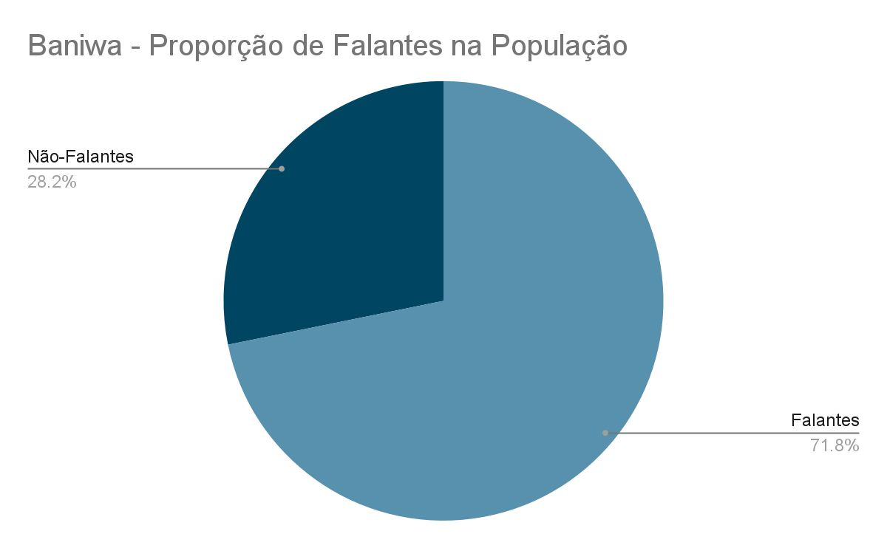
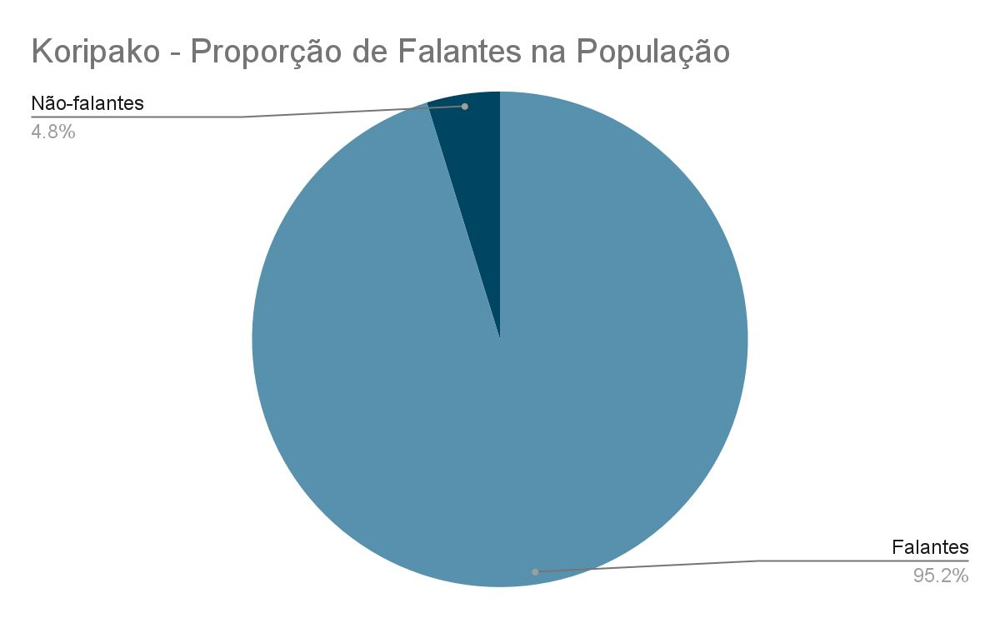
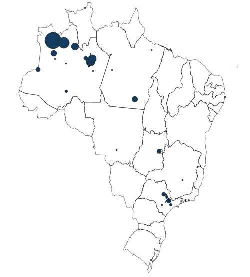
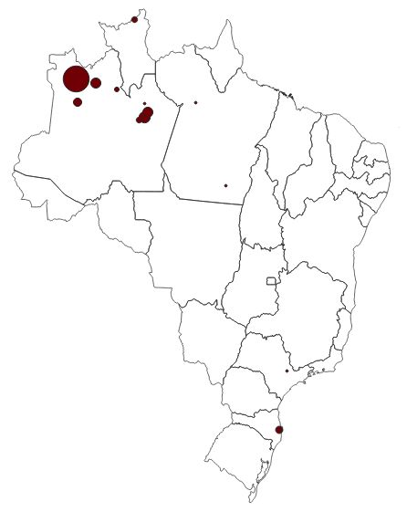
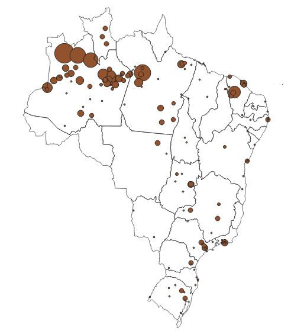
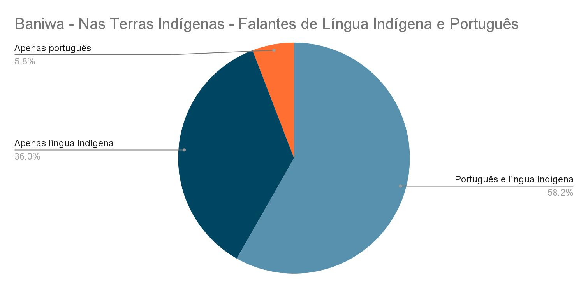
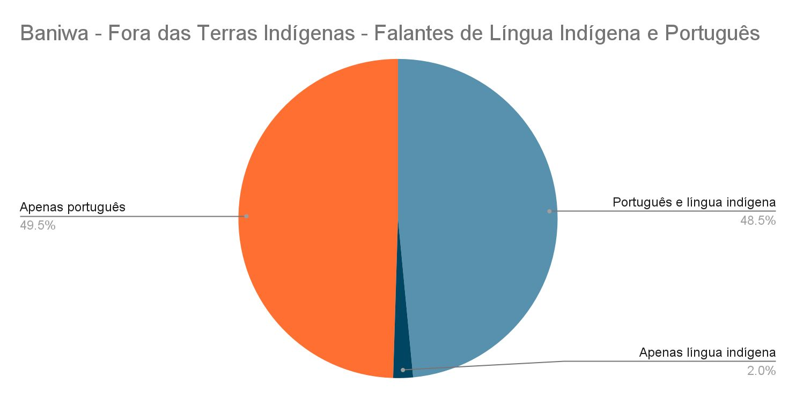
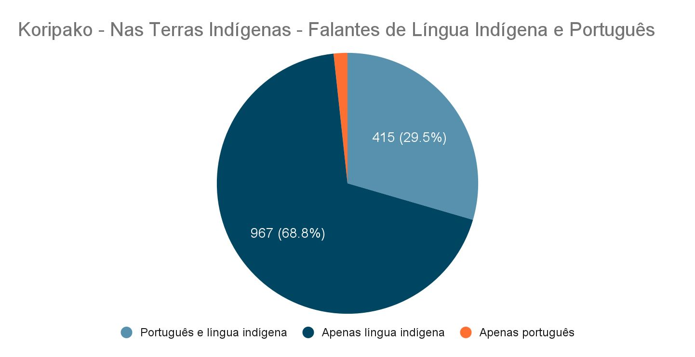
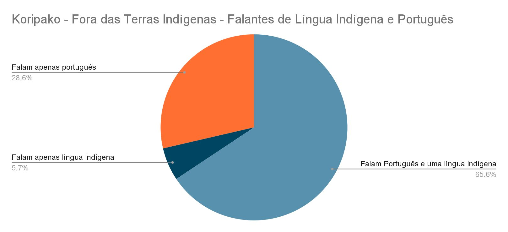

Baniwa
8.827pessoas Baniwa no Brasil6.338 falantes
Aproximadamente 71,8% do total.
Diagnóstico sociolinguístico
Uma leitura dos dados censitários sobre população, falantes, bilinguismo, multilinguismo, alfabetização e distribuição territorial, complementada pelos levantamentos do Inventário da Diversidade Linguística Medzeniako.
Como ler os números. O Censo trabalha com universos diferentes. Os totais de pessoas Baniwa e Koripako incluem todas as idades; as tabelas sobre língua e português consideram pessoas indígenas de dois anos ou mais. “Baniwa” e “Koripako” podem designar pertencimento étnico e língua declarada, enquanto Nheengatu aparece principalmente como língua. Por isso, números apresentados em quadros distintos não devem ser somados ou comparados sem observar seu universo.
Os dados nacionais mostram grande continuidade do Baniwa e, sobretudo, do Koripako. O Nheengatu possui dispersão territorial mais ampla e permanece fortemente concentrado no Alto Rio Negro.
6.338 falantes
Aproximadamente 71,8% do total.
2.056 falantes
Aproximadamente 95,2% do total.
7.868 em São Gabriel da Cachoeira
Cerca de 60% do total nacional.


Baniwa e Koripako apresentam concentração muito elevada em São Gabriel da Cachoeira e presença secundária em outros municípios amazônicos e centros urbanos. O Nheengatu forma uma rede mais extensa, com núcleos no Amazonas, Pará e Ceará e falantes registrados em diversas regiões do país.



Entre pessoas indígenas de dois anos ou mais, o Baniwa aparece em uma sociedade majoritariamente bilíngue. Entre os Koripako, falar somente a língua indígena é mais frequente e o português alcança aproximadamente metade da população considerada.
| Povo | Total | Somente português | Somente língua indígena | Português e língua indígena | Falantes de língua indígena |
|---|---|---|---|---|---|
| Baniwa | 8.383 | 1.973 (23,54%) | 1.850 (22,07%) | 4.534 (54,09%) | 6.401 (76,36%) |
| Koripako | 2.060 | 205 (9,95%) | 1.004 (48,74%) | 839 (40,73%) | 1.850 (89,81%) |
| Povo e situação territorial | Falam língua indígena | Falam português |
|---|---|---|
| Baniwa — em Terras Indígenas | 94% | 64% |
| Baniwa — fora de Terras Indígenas | 50% | 98% |
| Koripako — em Terras Indígenas | 98% | 31% |
| Koripako — fora de Terras Indígenas | 71% | 94% |




As respostas registram redes de comunicação que ligam o Içana ao Uaupés, ao Rio Negro e a outras regiões. Baniwa, Koripako e Nheengatu não aparecem como repertórios isolados, mas associados a diversas línguas indígenas.
O Nheengatu é a segunda língua indígena mais frequente (284 registros), seguido do Koripako (146). Kubeo, Wanano, Tariana e Tukano também aparecem. Entre as combinações trilíngues, destacam-se sequências que reúnem Baniwa, Koripako e Nheengatu.
O Baniwa é, com ampla diferença, a segunda língua indígena mais frequente (218 registros). Kubeo e Nheengatu aparecem em seguida, ambos com nove registros. As combinações trilíngues mais numerosas voltam a reunir Koripako, Baniwa e Nheengatu.
Tukano (126) e Baniwa (111) são as segundas línguas mais frequentes, seguidos por Koripako (16) e Yanomami (13). O Censo registra mais de vinte outras línguas associadas ao Nheengatu, evidenciando sua amplitude regional.
| Primeira língua registrada | Segunda língua | Registros |
|---|---|---|
| Baniwa | Nheengatu | 284 |
| Baniwa | Koripako | 146 |
| Baniwa | Kubeo | 24 |
| Baniwa | Wanano | 15 |
| Baniwa | Tariana | 12 |
| Baniwa | Tukano | 7 |
| Koripako | Baniwa | 218 |
| Koripako | Kubeo | 9 |
| Koripako | Nheengatu | 9 |
| Nheengatu | Tukano | 126 |
| Nheengatu | Baniwa | 111 |
| Nheengatu | Koripako | 16 |
| Nheengatu | Yanomami | 13 |
| Nheengatu | Kokama | 9 |
| Nheengatu | Dzubokuá | 6 |
| Nheengatu | Ka’apor | 6 |
Entre 30.868 pessoas indígenas de quinze anos ou mais no município, 27.772 foram registradas como alfabetizadas. A taxa varia consideravelmente segundo o repertório linguístico declarado.
| Repertório declarado | Taxa de alfabetização |
|---|---|
| Somente português | 97,41% |
| Português e língua indígena | 91,38% |
| Somente língua indígena | 71,84% |
| Nem língua indígena nem português | 78,05% |
O Censo confirma a força do Koripako e a ampla presença do Baniwa, mas mostra uma diferença territorial importante: fora das Terras Indígenas, o português torna-se quase universal e a proporção de falantes das línguas indígenas diminui, especialmente entre os Baniwa. Isso não significa que viver fora da Terra Indígena cause, por si só, o deslocamento linguístico. Migração, escolarização, casamentos, trabalho e acesso desigual a serviços participam conjuntamente desse processo.
Os dados também tornam visível um multilinguismo indígena extenso. As associações entre Baniwa, Koripako, Nheengatu, Tukano, Kubeo, Wanano, Tariana e outras línguas refletem redes históricas de parentesco, mobilidade e comunicação. Entretanto, o Censo informa quais línguas foram declaradas, não a frequência, a proficiência ou os contextos de uso. Tampouco permite distinguir adequadamente todas as variedades internas do Baniwa e do Koripako.
As diferenças entre os totais apresentados decorrem dos universos estatísticos utilizados. Os números gerais incluem todas as idades; os quadros sobre repertórios consideram pessoas de dois anos ou mais; e a alfabetização abrange pessoas indígenas de quinze anos ou mais em São Gabriel da Cachoeira. Essas distinções são indispensáveis para evitar interpretações contraditórias.